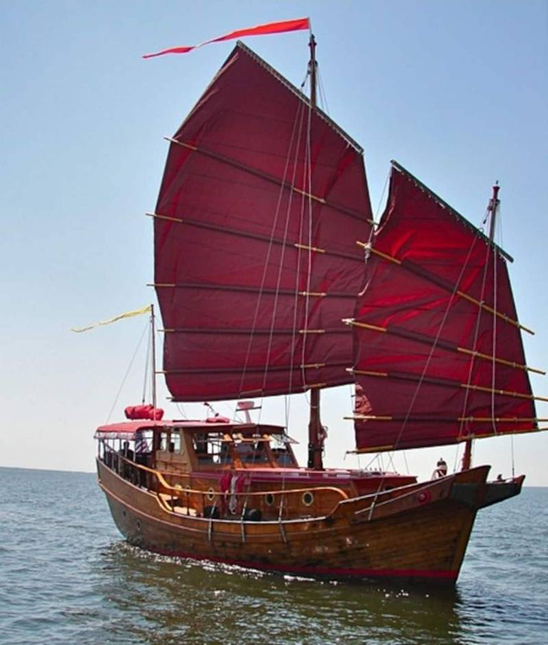
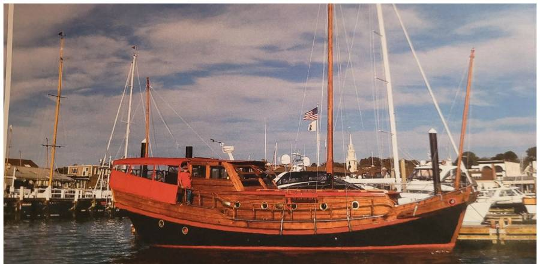
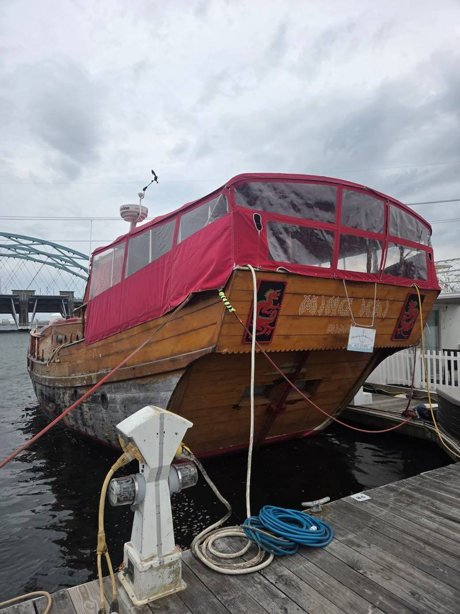
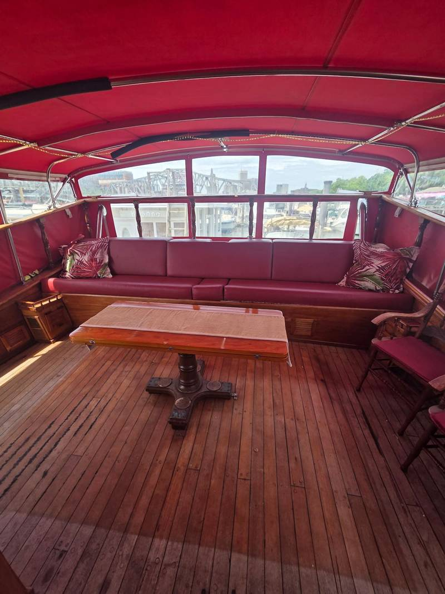
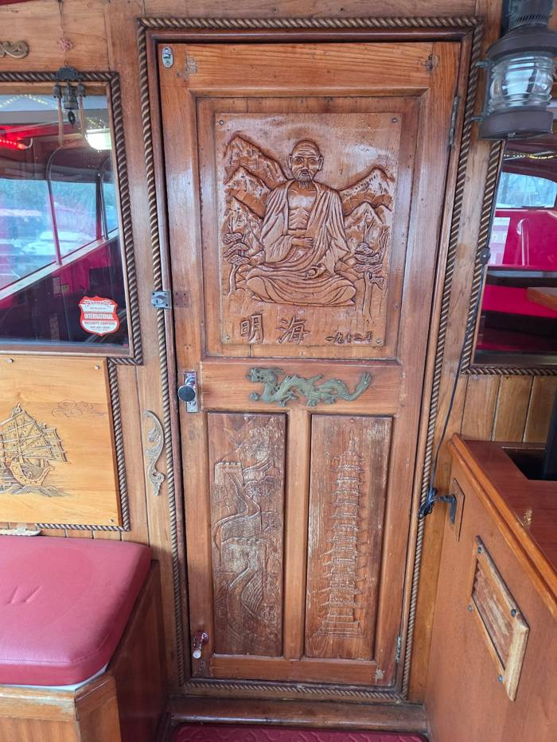

Bottom line
Over three years the Ming Hai most likely costs the brothers about $184,000 all-in (low $118,000, high $280,000). That is about $18,400 each for 10 brothers or $30,650 each for 6, roughly $511 or $851 a month. The $45,000 price is only about a quarter of it: the engine, the wooden hull and storage are the real bill.
If the engine really was overhauled in 2026 as the broker says, the likely total falls to about $150,850. Renting it on Airbnb could offset about $23,700 of that over 3 years, but only if it turns out to be legal and insurable, which is unproven and is the biggest red flag.

What this is
The Ming Hai is a 1972 custom Chinese junk rig, 49.8 feet, three masts, all teak, moored in Providence. A brother posted the Facebook Marketplace listing in the group chat, and half-jokingly, the pirate lodge asked: could we actually own this? Another brother put it well: if the pirates are going in on a boat together, their eyes should be wide open. This is that look, with the price fixed at $45,000 (the Facebook price after a $5,000 cut from the broker's $50,000 ask).
Every number below comes from a published source or is labeled as an estimate with its basis. This is a planning tool, not a quote.




The facts we have
- Broker page (Atlas Marine Group): Sale Pending, 1972, 49.8 ft, three masts, all teak, AC, wiring and electronics updated, hull sides need paint or varnish, moored in Providence, offered at $50,000. It claims $45,000+ of professional work in 2026 (bow thruster, batteries, canvas, overhauled motors, new transmissions, cutlass bearings, shaft seals, bilge pumps), with a warranty, and a projected seasonal Airbnb/VRBO income of $24,000-$28,000.
- Airbnb listing: sleeps 6, 3 bedrooms, 2 baths, five stars from 7 reviews. It says the exterior finishes are under maintenance and the air conditioning is "temperamental". It also says the boat was built in Hong Kong. The RI short-term rental registration expires 2027-02-09.
- Facebook ad: price drop, "final price reduction before de-listing, shrink wrap and winterization." We could not open it (login required), so the $45,000 price comes from Gregg.
- In the chat: a brother said to deduct the seized motor and a new motor installed. Another guessed a new engine at about $5,000. A third said it is more than that, and that a rebuild may be better. The sources below back the third.
The 3-year table
Year 0 is the buy-and-fix year, through the first winter. Years 1-3 are each a full season plus winter, for private/brothers' use. All figures are rounded and are estimates.
| Item | Low | Likely | High |
|---|---|---|---|
| Year 0: buy and fix | |||
| Purchase price (FB listing after $5k cut; broker ask $50k) FB listing price per Gregg: $45,000 (a $5k cut from the broker ask of $50,000). RI charges no sales/use tax on boats. | $45,000 | $45,000 | $45,000 |
| Pre-purchase survey (wooden, out of water) US $28-36/ft pre-purchase; wooden boats billed hourly (Lake Champlain); x50 ft = $1,400-1,800 base; likely adds wooden/hours; high = multi-day (estimate). | $1,500 | $2,200 | $3,500 |
| Engine survey / compression + oil test Diagnosis GBP200-600 (BoatBuddy) ~ $260-800; oil analysis $75/sample (Boston Marine Surveyors); twin engines would double. | $300 | $800 | $1,500 |
| Haul for survey (short haul) Harbor Lights short haul $12/ft = $600; full haul $20/ft = $1,000. | $600 | $1,000 | $1,500 |
| Engine: rebuild vs repower Rebuild GBP5-10k (20-60hp) to GBP10-20k+ (80-150hp) (BoatBuddy). Repower $20-30k for 38-45hp, $30k+ if complex (Sailboat Atlas). Low=rebuild, Likely=new/reman installed 60-100hp, High=complex repower. Estimate for one engine. | $10,000 | $30,000 | $45,000 |
| Wood-hull catch-up: caulk, soft planks, refastening Woodworking $98/hr (Rockport Marine, ME). ~50 / ~150 / ~400 yard hours (estimate). Real number only after out-of-water survey. | $5,000 | $15,000 | $40,000 |
| Topsides: paint or varnish (listing: 'need paint or varnish') Per-foot proxies x50 ft: varnish $45/ft and hull topcoat $200/ft (High Tide Composites); topsides paint $300/ft (Berkeley Marine, CA). Out-of-state yards; RI quotes needed. | $2,250 | $10,000 | $15,000 |
| Bottom paint, first launch RI $26-42/ft (Boatyards.com); Harbor Lights labor $23/ft. | $1,300 | $1,700 | $2,100 |
| Rigging & sails reserve (3 masts) Junk sails $2.5-5k per 32ft junk schooner (Junk Rig Assoc.); std. rigging $5-10k for 30-50ft (Improve Sailing). Seller: 'new canvas'. Estimate. | $2,000 | $5,000 | $15,000 |
| Safety gear & commissioning (extinguishers, PFDs, exit diagrams) Estimate. Providence STR rules require posted exit diagrams and marked extinguishers. | $1,000 | $2,000 | $4,000 |
| First winter: haul, store, launch + shrink wrap Per foot x 50 ft: Frank Hall $68, RI Mooring $73 (+$4.50 wash), Harbor Lights $80; wrap $28/ft + $50 + materials (estimate). | $4,850 | $5,800 | $6,450 |
| RI registration (46-50 ft, biennial) + USCG documentation RI DEM $418 / 2 yrs for 46-50 ft; USCG initial documentation $133 (optional). | $551 | $551 | $551 |
| Contingency on repair lines (10% / 10% / 15%) 10-15% contingency is standard (Wave Inboard Motors; X Factors Motorsports). | $2,150 | $6,350 | $18,150 |
| Year 0 total | $76,501 | $125,401 | $197,751 |
| Each of Years 1-3: operate | |||
| Summer slip (May-Oct), ~50 ft Providence Marina 2026 agreement: $110/ft summer; Harbor Lights $125-166/ft. Likely = midpoint (estimate); the Ming Hai's own marina rate is unknown. | $5,500 | $6,500 | $8,300 |
| Winter haul, store, launch + shrink wrap As Year 0. | $4,850 | $5,800 | $6,450 |
| Maintenance reserve (10% rule: repairs, varnish, bottom paint, winterizing) Wooden-boat rule of thumb 10%/yr of value (Points East). Low 5% if brothers do the labor, high 15% (estimates) on $45k. | $2,250 | $4,500 | $6,750 |
| Hull/agreed-value insurance, private use 1-5% of insured value (Keel Index citing Chubb etc.); old wooden boats need an out-of-water survey. | $450 | $900 | $2,250 |
| Fuel (diesel at $6.60/gal; 30 / 80 / 200 gal) RI marina diesel ~$6.60/gal Nov 2026 ($5.69-7.23). Gallons are an estimate. | $200 | $550 | $1,300 |
| Registration / documentation renewal RI $418/2 yrs; USCG renewal $26/yr. | $235 | $235 | $235 |
| Supplies, dockside misc. Estimate. | $500 | $1,000 | $2,000 |
| Per-year total | $13,985 | $19,485 | $27,285 |
| 3-YEAR TOTAL (Year 0 + 3 years) | $118,456 | $183,856 | $279,606 |
| Per brother, 6 brothers (rounded to $50) | $19,750 | $30,650 | $46,600 |
| Per brother, 10 brothers (rounded to $50) | $11,850 | $18,400 | $27,950 |
| Per brother per month, 6 brothers | $548 | $851 | $1,294 |
| Per brother per month, 10 brothers | $329 | $511 | $777 |
Low, likely and high are each internally consistent scenarios, not statistical bounds. Low assumes a rebuilt engine, a sound hull and brothers doing some labor. High assumes a complex repower and real wood repairs. If the engine proves sound (broker's claim), the 3-year total is about $107,450 / $150,850 / $227,850. Rates from out-of-state yards (Maine, California) are used as proxies where no RI figure was found; get RI quotes. Rhode Island charges no sales or use tax on boats.
Optional: could Airbnb pay for it?
Only if renting turns out to be legal and insurable (see red flags). The seller's $24,000-$28,000 per season is the best case, not a plan. Our model uses a May 1-October 31 season (184 nights), 35% / 50% / 60% occupancy at $195 / $225 / $250 a night, minus Airbnb's 15.5% host fee and about $40 per booked night for cleaning. Occupancy is our estimate, scaled down from AirDNA's 59% for all Providence rentals because the boat is seasonal, has only 7 reviews and a temperamental AC. Nightly rates are an estimate from other Providence boat rentals listed at $195-$395. The guest-paid 14% rental tax is a pass-through and not counted.
| Per season | Low | Likely | High |
|---|---|---|---|
| Nights booked | 64 | 92 | 110 |
| Gross rent | $12,480 | $20,700 | $27,500 |
| Net after Airbnb fee and cleaning | $7,986 | $13,812 | $18,838 |
| 3-year net income | $23,958 | $41,436 | $56,514 |
| Rental-only extra costs over 3 years, which cover commercial insurance in place of the private policy, a captain's license, and the $25 RI registration $300-2,000 small ops up to $8k+ per vessel (RentMy, Graystone); one houseboat host paid $6,400, then $9,400 w/ $1M liability (Airbnb Community). Florida, 2023. Net of private premium. Course $595-695 + MMC $145 + TWIC/physical/drug test; $1,000-1,300 all-in (Sea School, Mariners Learning System). | $5,725 | $17,725 | $22,825 |
| Net rental benefit over 3 years | $18,233 | $23,711 | $33,689 |
In the likely case renting offsets about $23,700, so the 3-year total drops to about $160,150 (about $16,000 per brother for 10). In a bad case (low income against high costs) it is about $1,150, essentially break-even. The good case is about $50,800. Income is not guaranteed, and the license and insurance assume you could legally rent at all.
Red flags
- Is it even for sale, and at what price? The broker page says Sale Pending (offered at $50,000). The Facebook ad says final price reduction before de-listing. Get the current price and status in writing before anything else.
- The engine story does not match. In the group chat the motor was described as seized, while the broker says motors were overhauled in 2026, with $45,000+ of professional work and a warranty. Both cannot be true. "Motors" is plural, so there may be two. The engine line swings the 3-year total by about $33,000.
- Renting it out may not be legal or insurable. Per the Coast Guard, paying overnight guests on a boat is a commercial operation even at the dock. Options are limited: a licensed captain aboard (6 guests max), or a true bareboat charter where the owner is not aboard. The Airbnb page says the boat was built in Hong Kong, which raises foreign-built vessel rules for carrying passengers for hire. Penalties in the Coast Guard pamphlet run up to $42,750 per day. Providence and RI also have STR rules, and the current listing, reviews and RI registration are the seller's and do not transfer by themselves.
- Fifty-year-old wooden hull, no survey. Soft planks, bad fastenings and rot only show up out of the water. The hull line runs from $5,000 to $40,000 until a surveyor looks.
- Co-owning with 6 to 10 brothers. Put ownership in an LLC with a written operating agreement and a repair fund before anyone wires money. Keep it clearly separate from Harmony Lodge No. 9.
Next steps, in order
- Do not send a deposit or any money yet.
- Ask the broker in writing: current price and status, and invoices for the 2026 work, especially the engine and transmissions.
- Hire a wooden-boat surveyor (SAMS/NAMS) for an out-of-water survey, plus an engine compression and oil test. Price it as part of the deal.
- Get two insurance quotes before making an offer: private use, and commercial rental.
- Before counting any rental income, ask the Coast Guard and a maritime lawyer in writing; check Providence zoning and permits.
- Agree on a walk-away number and a structure (LLC, monthly dues, repair reserve).
Sources
- Atlas Marine Group listing (Sale Pending, $50,000, 49.8 ft)
- Airbnb listing (6 guests, 7 reviews, built in Hong Kong, registration expires 2027-02-09)
- Boston Marine Surveyors rates 2025/26 ($28-30/ft pre-purchase)
- Lake Champlain Marine Survey ($30-36/ft; wooden vessels hourly)
- Sailboat Atlas: repowering ($20-30k for 38-45 hp, $30k+ if complex)
- Wave Inboard Motors: 2025 repower budget, 10-15% contingency
- BoatBuddy: diesel rebuild cost (updated Nov 2026)
- Rockport Marine yard rates ($98/hr woodworking, ME)
- High Tide Composites ($45/ft varnish, $200/ft topcoat)
- Berkeley Marine Center ($300/ft topsides paint, CA)
- Harbor Lights Marina, Warwick RI (haul $20/ft, storage $61-80/ft, wrap $28/ft, bottom paint $23/ft, slips $125-166/ft)
- Frank Hall Boat Yard, Westerly RI ($68/ft outside winter storage)
- RI Mooring Services, N. Kingstown ($73/ft for 43 ft+)
- Providence Marina 2026 slip agreement ($110/ft summer, $45/ft winter)
- Boatyards.com: RI haul, bottom paint and storage ranges
- Junk Rig Association: cost estimate for new sails
- Improve Sailing: standing rigging replacement cost
- Points East: "The unvarnished truth about the 10 percent rule"
- Keel Index: insuring an older sailboat (1-5% of value, survey needed)
- Hagerty: classic wooden boats may need an out-of-water SAMS/NAMS survey
- Airbnb Community: houseboat host paid $6,400 to $9,400/yr (Florida, 2023)
- USCG Auxiliary: Passenger for Hire & Charter pamphlet (boat B&B, UPV, bareboat, fines)
- City of Providence: short-term rental rules
- RI DBR: STR registration ($25/yr, houseboats included, not transferable)
- RI Division of Taxation: no sales/use tax on boats
- RI DEM boat registration fees ($418 per 2 yrs, 46-50 ft)
- USCG documentation fees ($133 initial, $26/yr renewal)
- Airbnb host fee: 15.5% (Oct 2026)
- AirDNA: Providence STR occupancy 59%, RevPAR $163 (Nov 2026)
- Providence boat rentals on Airbnb-type sites: $195-$395/night
- OUPV six-pack cost ($1,000-1,300 all-in)
- RI marina diesel ~$6.60/gal (Waterway Guide)
Rates from out-of-state yards (Maine, California) are used as proxies where no RI figure was found; get RI quotes. Photos: listing (Atlas Marine Group and Airbnb pages), shown for reference. This is a planning estimate, not financial, legal or insurance advice. Download the one-page PDF.